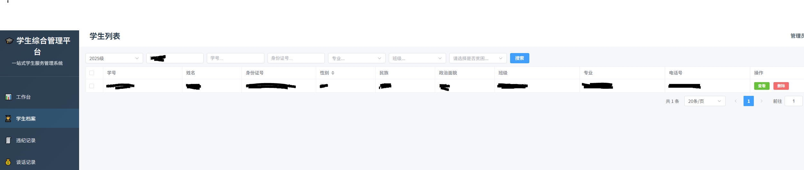
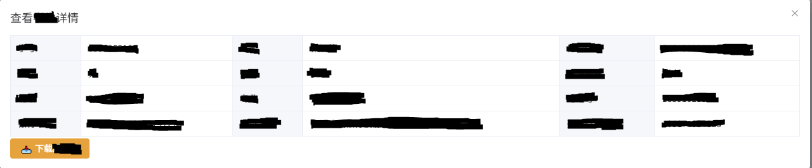
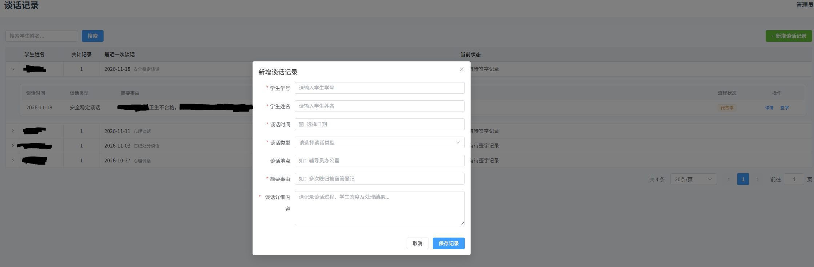

作为一名教育从业者，日常工作里除了教学与沟通之外，还有不少高频但零碎的事务：信息核对、资料汇总、日常登记、文档归档，以及各种跨环节的临时查询。
以前没有顺手工具的时候，这些东西大多散落在零散的表格、聊天记录和纸质本子里。一旦要核对某条信息或导出某份材料，就得在几个地方来回翻找，不仅容易出错，还特别耗神；沟通记录和后续的文档整理也常常需要手动重复排版，真正花在沟通上的精力反而被琐事切碎了。
一、为什么不等“全套规划”才动手？
我是水瓶座，骨子里不太喜欢被僵化的流程绑架，也不喜欢一上来就闭门造车，搞出一个看起来很宏大、但实际上半年都用不上的“大系统”。当时我的想法很明确：先解决眼前最痛、最频繁的几个点，其他的遇到了再加，不想做无用功。
与其空想一套大而全的系统，不如先给自己做一套顺手的工具。趁着业余时间，我一点点把前后端和云服务串了起来，目前只聚焦在真正用得上的几个核心场景，没有做多余的多端入口，也不去提前设计用不到的复杂功能。
二、目前真正跑通的三个核心场景
这套工具完全围绕“自己用起来顺手、能立刻省时间”来落地，目前已经稳定用起来的重点是这三块：
- 基础台账与信息快速检索：把日常高频核对的台账与联系信息集中管理，需要查验或核对时在后台快速检索，不用再在零散表格和聊天记录里大海捞针。
- 常用文档后台一键导出：针对高频调取的资料与文档，在管理后台直接实现按需生成与一键下载，省去了在本地各个文件夹里翻找的时间。
- 沟通记录提交与格式化输出：每次完成沟通后，直接在系统里把要点提交上去，自动生成格式规整的记录文件，方便后续归档或按流程确认，减少手动排版的重复劳动。



三、技术架构：让云服务“各管一摊事”
一个人利用业余时间做全栈开发，最怕的就是把所有精力耗在服务器和数据库运维上。所以我采用的思路是轻量组合 + 云服务分工，让擅长的组件各管一摊事：
- 前端（Vue3）：负责界面交互与信息展示，把信息检索、内容录入提交、文件导出等操作串起来，保持界面干净克制，重点放在效率而不是花哨特效。
- 后端（Flask）：放在自己的云服务器上运行，承担核心接口处理、业务逻辑以及记录文件的生成。Flask 足够轻量，单人开发和后续改需求都很直接。
- 数据库（MongoDB Atlas）：业务数据与记录交给云端的 MongoDB Atlas 托管。文档型结构对字段调整比较友好，也不用自己操心本地数据库的日常维护。
- 对象存储（Cloudflare R2）：导出的文件与归档附件放到 Cloudflare R2 上管理，和业务数据分开存放，结构更清楚。
四、那些踩过又记不太清的坑，和卡最久的 R2
既然是个人从零搭全栈，一路上其实踩了不少坑，有些具体报错细节做完也就翻篇、记不太清了，但那种“明明逻辑看起来没问题，却在某个配置或边界上卡半天”的状态印象很深——比如前后端联调时的请求路径与跨域细节、云端数据库网络白名单与字段空值处理、导出文件时中文编码或格式对齐的小毛病，以及反向代理转发规则的反复核对。这些零碎的坑，以后有空或者谁问起某一点时，我也会挑出来单独写成文章。
这当中真正让我卡了挺久的，是对接 Cloudflare R2 对象存储。一开始看中 R2 兼容 S3 协议、存储成本低，想着用来放导出文件和归档内容很合适，结果第一步就卡在了支付与账号验证上——开通和验证阶段需要绑定可用卡片，光是解决这一关就折腾了不少时间。
迈过验证这一步之后，真正把代码接进 R2 也不是一帆风顺的。客户端初始化、Endpoint 与凭证配置、文件上传和下载接口的联调，每一步都要反复对照文档和日志排查。直到把文件真正存进去、再从后台顺利下载出来那一刻，才算把这条链路彻底打通。
import os
import boto3
from botocore.config import Config
def create_r2_client():
return boto3.client(
service_name="s3",
endpoint_url=os.environ["R2_ENDPOINT_URL"],
aws_access_key_id=os.environ["R2_ACCESS_KEY_ID"],
aws_secret_access_key=os.environ["R2_SECRET_ACCESS_KEY"],
config=Config(signature_version="s3v4"),
region_name="auto",
)五、安全边界与写在最后
既然工具里涉及日常记录与文件流转，访问边界就不能马虎。我在服务端和接口层做了基础的访问控制与鉴权隔离，把核心操作限制在可控范围内，对于个人自用来说，既简单直接，又能守住基本的访问边界。
到现在为止，这套工具并不是一个“功能大而全”的成品，其他零散痛点也依然存在。但对我来说，这恰恰是最舒服的状态：真实遇到哪方面的麻烦，再针对性地往里加功能；没必要提前做的事，就不去折腾无用功。
写下这篇记录，既是为了留存自己从零搭出这套全栈系统的真实过程，也是想给自己留一份阶段性的折腾备忘——一个会观察一线痛点、能独立把想法变成可用系统的水瓶座开发者。以后如果有了新的折腾、新的经验或者谁想了解哪方面，我也会单独出一篇针对那个问题的文章。
评论区（Giscus）